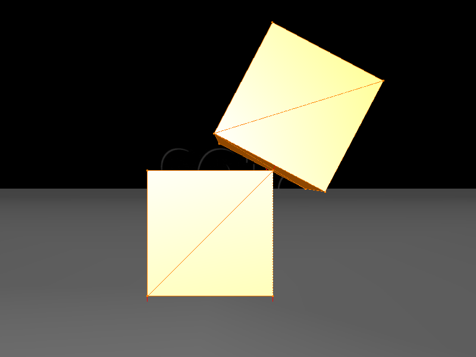

Collision Tutorials
 |
 |
 |
| Triangle Based Modelization | Multiple Objects Handling | Advanced Response |
Description
In these tutorials, we will try to explain the different ways of modeling the collision detection and response in SOFA. First, we will recall what you may have seen in the previous Step by step tutorials about the modelization of the collision model. Then we will explain how the collisions between objects are handled, and the effect on the stability of the different approaches. Finally, we will see advanced features about collision response, with constraint based response allowing us to simulate friction.